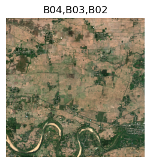
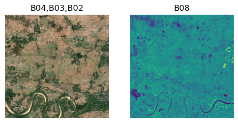

bands.get_captions([["B03","B02","B01"], ["B01"], ["B03"]]),(['B03,B02,B01', 'B01', 'B03'],)MSDescriptorWe need a class that provides basic information about all the channels in the source data. The initial fields are based on the requirements of Sentinel2 images.
MSDescriptor ()
Initialize self. See help(type(self)) for accurate signature.
We use factories to create sensible defaults
The list of ‘raw’ bands for sentinel 2 images is “B01”,“B02”,“B03”,“B04”,“B05”,“B06”,“B07”,“B08”,“B8A”, “B09”,“B10”,“B11”,“B12”,“AOT”]
As described here, these images are naturall “dark” and we allow them to be brightened for display by providing a list of brightening multipliers. For this factory, I have selected values that seem to work well with our data, but it is by no means authoritative.
The third parameter is a list of the resolution of each raw band.
Finally we provide some named groups of 3 bands each, that have been found useful in providing false color images for different applications. The goal is to create (multiple) RGB images, corresponding to such sets of bands, for each multi-spectral tensor.
createSentinel2Descriptor ()
This method lists all bands of a given resolution.
MSDescriptor.get_res_ids (res:int)
We can find the brightness multipliers corresponding to a list of channel names with this
MSDescriptor.get_brgtX (ids:list[str])
… and so also the brightness value lists corresponding to name lists
MSDescriptor.get_brgtX_list (ids_list:list[list[str]])
MSDataWe then create a MSData wrapper class which takes parameters that specifiy how to load the multi spectral image into a TensorImageMS object.
MSData ()
Initialize self. See help(type(self)) for accurate signature.
MSData.from_delegate (ms_descriptor:__main__.MSDescriptor, band_ids:list[str], chn_grp_ids:list[list[str]], tg_fn:Callable[[list[str],Any],torch.Tensor])
MSData.from_files (ms_descriptor:__main__.MSDescriptor, band_ids:list[str], chn_grp_ids:list[list[str]], files_getter:Callable[[list[str],Any],list[str]], chan_io_fn:Callable[[list[str]],torch.Tensor])
def get_input(stem: str) -> str:
"Get full input path for stem"
return "./images/" + stem
def tile_img_name(chn_id: str, tile_num: int) -> str:
"File name from channel id and tile number"
return f"Sentinel20m-{chn_id}-20200215-{tile_num:03d}.png"
def get_channel_filenames(chn_ids, tile_idx):
"Get list of all channel filenames for one tile idx"
return [get_input(tile_img_name(x, tile_idx)) for x in chn_ids]
seg_codes = ["not-cloudy","cloudt"]We can create a sentinel data loader for only the RGB channels
where read_multichan_files_as_tensor is defined here
or we might choose to only look at the 10m resolution bands
or even 11 channels of sentinel 2 data
MSData.load_image (img_id)
MSData.num_channels ()
[<AxesSubplot:title={'center':'B04,B03,B02'}>]
[<AxesSubplot:title={'center':'B04,B03,B02'}>,
<AxesSubplot:title={'center':'B08'}>]
MaskDataFinally, for convenience, we provide a wrapper class to load mask data
MaskData ()
Initialize self. See help(type(self)) for accurate signature.
MaskData.load_mask (img_id)
MaskData.num_channels ()
MaskData.from_delegate (mask_id:str, tg_fn:Callable[[list[str],Any],torch.Tensor], mask_codes:list[str])
MaskData.from_files (mask_id:str, files_getter:Callable[[list[str],Any],list[str]], mask_io_fn:Callable[[list[str]],torch.Tensor], mask_codes:list[str])
MSAugmentA wrapper class for augmentations
MSAugment ()
Initialize self. See help(type(self)) for accurate signature.
Next we create the various transforms required for the fastai pipeline
MSData.create_xform_block ()
MaskData.create_xform_block ()
FastGSFinally we have a master wrapper class which provides the high level api to create fastai datablocks and learners.
FastGS ()
Initialize self. See help(type(self)) for accurate signature.
FastGS.create_data_block (splitter=<function _inner>)
FastGS.create_unet_learner (dl, model, pretrained=True, loss_func=FlattenedLoss of CrossEntropyLoss(), metrics=<fastai.metrics.Dice object at 0x7f28ab1a5070>, reweight='avg')
/opt/homebrew/Caskroom/miniforge/base/envs/fastgs/lib/python3.10/site-packages/torchvision/models/_utils.py:208: UserWarning: The parameter 'pretrained' is deprecated since 0.13 and may be removed in the future, please use 'weights' instead.
warnings.warn(
/opt/homebrew/Caskroom/miniforge/base/envs/fastgs/lib/python3.10/site-packages/torchvision/models/_utils.py:223: UserWarning: Arguments other than a weight enum or `None` for 'weights' are deprecated since 0.13 and may be removed in the future. The current behavior is equivalent to passing `weights=ResNet18_Weights.IMAGENET1K_V1`. You can also use `weights=ResNet18_Weights.DEFAULT` to get the most up-to-date weights.
warnings.warn(msg)